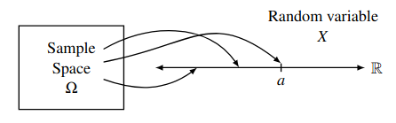
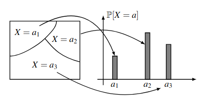
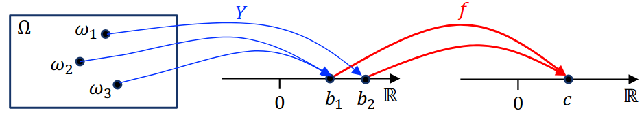

Random Variables
Table of Contents
1. Random Variables
A random variable is a function \(X: \Omega \rightarrow \mathbb{R}^n\) satisfying certain technical conditions. For example, say we toss a fair coin twice. Our probability space is then \(\Omega = \{(H, H), (H, T), (T, H), (T, T)\}\). We can define a random variable \(X(\omega)\) where \(\omega\) is an event in \(\Omega\) and \(X\) is the number of heads in \(\omega\):

Let \(\mathcal{A} = \{a \in \mathbb{R} | \exists \omega \in \Omega ( X(\omega) = a)\}\) denote the range of \(X\). Then, for a given \(a \in \mathcal{A}\), the event \(X=a\) is defined as the pre-image:
\begin{align} X^{-1}(a) = \{\omega \in \Omega | X(\omega) = a\} \subseteq \Omega \end{align}2. Probability Distributions
Similar to how for a probabilty space we define a sample space and a probability for each sample point in that space, a random variable is characterized by:
- The set of values \(\mathcal{A}\) it can take.
- The probabilities \(\mathbb{P}(X = a, a \in \mathcal{A})\) with which it takes on those values.
The collection of all these probabilities \(\mathbb{P}(X=a)\) for all possible values of \(a \in \mathcal{A}\) is known as the probability distribution of the random variable \(X\).
Notice that the collection of events \(X=a\) for \(a \in \mathcal{A}\) satisfy two important properties:
- Any two events \(X=a_1\) and \(X=a_2\) with \(a_1\neq a_2\) are disjoint.
- The union of all these events \(X=a\) is equal to the entire sample space \(\Omega\).
Therefore, the collection of these events form a partition of the sample space \(\Omega\):

2.1. Bernoulli Distribution
The Bernoulli distribution is a probability distribution of a random variable which takes on a value in \(\{0, 1\}\):
\begin{align} \mathbb{P}[X=i] = \begin{cases} p & i=1 \\ 1-p & i=0 \end{cases} \end{align}where \(0 \leq p \leq 1\). We write \(X \sim \text{Bernoulli}(p)\) or \(X \sim \text{Ber}(p)\) to say that \(X\) is distributed as a Bernoulli random variable with parameter \(p\).
2.2. Binomial Distribution
Say we have \(B\) blue balls, \(R\) red balls, and we sample \(n\) times with replacement. Call drawing a blue ball with probability \(p\) a success. Then, let our random variable \(X\) be the number of successes in our \(n\) samples.
The probability of getting exactly \(k\) successes follows a binomial distribution as follows:
\begin{align} \mathbb{P}[X=k] = \binom{n}{k}p^k(1-p)^{n-k} \end{align}for \(k = 0, 1, \dots , n\). A random variable with this distribution is called a binomial random variable, and we write \(X \sim \text{Bin}(n,p)\) where \(n\) denotes the number of trials and \(p\) is the probability of success.
2.3. Hypergeometric Distribution
Say we have \(B\) blue balls and \(R = N-B\) red balls. We sample \(n\) times without replacement. Let the event \(\omega\) be when we have exactly \(k\) blue balls and \(n-k\) red balls. Then, the probability of this particular sequence of samples is:
\begin{align} \mathbb{P}[\omega] &= \frac{B}{N}\left(\frac{B-1}{N-1}\right)\cdots\left(\frac{B-k+1}{N-k+1}\right)\left(\frac{R}{N-k}\right)\cdots\left(\frac{R-(n-k)+1}{N-n+1}\right) = \frac{\binom{B}{k}\binom{W}{n-k}}{\binom{N}{n}}\frac{1}{\binom{n}{k}} \notag \end{align}Furthermore, any other sequence \(\omega'\) of \(k\) blue balls and \(n-k\) red balls have the same exact probability as \(\omega\). Since there are a total of \(\binom{n}{k}\) distinct sequences, we obtain:
\begin{align} \mathbb{P}[X=k] = \frac{\binom{B}{k}\binom{N-B}{n-k}}{\binom{N}{n}} \end{align}for \(k=0,1,\dots ,n\). This probability distribution is called the hypergeometric distribution, and we write \(X \sim \text{Hypergeometric}(N, B, n)\).
2.4. Geometric Distribution
Say we have a number of \(\text{Bernoulli}(p)\) trials, where \(p\) is the success probability. Define the random variable \(X\) as the number of trials it takes to the first success. Then the distribution of \(X\) is a geometric distribution:
\begin{align} \mathbb{P}(X=k) = (1-p)^{k-1}p \end{align}
for \(k \in \mathbb{Z}^+\), and we write \(X \sim \text{Geometric}(p)\) where \(0
As \(p\) decreases, \(\mathbb{E}[X]\) should increase, as it takes more trials to get a success. Observe that \(\mathbb{P}[X\geq k] = (1-p)^{k-1}\). Then, by the tail sum formula, we get:
Alternatively, observe that the derivative of \((1-p)^k\) is \(-k(1-p)^{k-1}\). We can use this fact to simplify our calculations when we directly use the definition of expectation:
2.4.1. Memoryless Property
Say we are doing a series of \(\text{Bernoulli}(p)\) trials, and we have seen a string of failures. The question is, how much longer do we ned to wait to see a success?
The memoryless property says that this wait time is independent of what has happened in the past. More specifically,
\begin{align} \mathbb{P}[X>n+m | X>m] = \mathbb{P}[X>n] \end{align}It turns out that the geometric distribution is the only discrete probability distribution that satisfies the memoryless property.
2.5. Poisson Distribution
If a random variable is distributed according to a Poisson distribution, then we write \(N \sim \text{Poisson}(\lambda)\), where \(\lambda\) is a measure of intensity such that \(\lambda > 0\). Then
\begin{align} \mathbb{P}[N=k] = e^{-\lambda}\frac{\lambda^k}{k!} \end{align}This is used to model processes such as the number of rain drops hitting a surface per second.
Say we have \(Q \sim \text{Binomial}(n,p)\) such that \(n \rightarrow \infty\) and \(p \rightarrow 0\), while \(np = \lambda\) is held fixed. Then \(Q_k = \binom{n}{k}p^k(1-p)^{n-k}\). Thus, \(Q_0 = (1-p)^n=\left(1-\frac{\lambda}{n}\right)^n \rightarrow e^{-\lambda}\).
Now consider the ratio \(\frac{Q_k}{Q_{k-1}}\):
\begin{align} \frac{Q_k}{Q_{k-1}} = \frac{\binom{n}{k}p^k(1-p)^{n-k}}{\binom{n}{k-1}p^{k-1}(1-p)^{n-k+1}} = \frac{np}{k}\left[\frac{1-\frac{k-1}{n}}{1-p}\right] \notag \end{align}As we consider the limits, the term \(\frac{1-\frac{k-1}{n}}{1-p} \rightarrow 1\), so we have:
\begin{align} \frac{Q_k}{Q_{k-1}} = \frac{\lambda}{k} \notag \end{align}Then, we can find \(Q_k\) by the telescoping product:
\begin{align} Q_k=Q_0\frac{Q_1}{Q_0}\frac{Q_2}{Q_1}\cdots\frac{Q_k}{Q_{k-1}} &= e^{-\lambda}\left(\frac{\lambda}{1}\right)\left(\frac{\lambda}{2}\right)\cdots\left(\frac{\lambda}{k}\right) \notag \\ &= e^{-\lambda}\frac{\lambda^k}{k!} \notag \end{align}This is precisely the Poisson distribution! So, the Poisson distribution is an approximation of the binomial distribution for rare events (\(p \rightarrow 0\)) over a continuous time (\(n \rightarrow \infty\)).
Additionally, we have:
\begin{align} \mathbb{E}[X] = \lambda \notag \\ \text{Var}(X) = \lambda \notag \end{align}Theorem: We can also add Poisson distributions. Suppose \(X \sim \text{Poisson}(\lambda)\) and \(Y \sim \text{Poisson}(\mu)\) are independent random variables. Then, \(X+Y \sim \text{Poisson}(\lambda + \mu)\).
Proof: We can partition the event \(\mathbb{P}[X+Y=n]\) as \(\sum_{k=0}^n \mathbb{P}[X=k,Y=n-k]\). Then, by independence we have:
\begin{align} \mathbb{P}[X+Y=n] &= \sum_{k=0}^n\mathbb{P}[X=k]\mathbb{P}[Y=n-k] \notag \\ &= \sum_{k=0}^n\frac{e^{-\lambda}\lambda^k}{k!} \cdot \frac{e^{-\mu}\mu^{n-k}}{(n-k)!} \notag \\ &= \frac{e^{-(\lambda + \mu)}}{n!}\sum_{k=0}^n\frac{n!}{k!(n-k)!}\lambda^k\mu^{n-k} \notag \end{align}By the binomial theorem, we get
\begin{align} \mathbb{P}[X+Y=n] = \frac{e^{-(\lambda + \mu)}(\lambda+\mu)^n}{n!} \notag \end{align}Thus, \(X+Y \sim \text{Poisson}(\lambda + \mu)\). \(\square\)
3. Multiple Random Variables
3.1. Joint and Marginal Distributions
Oftentimes we are interested in multiple random variables on the same sample space. When this happens, we can define the joint distribution of two discrete random variables \(X\) and \(Y\) as the collection of all the probabilities \(\mathbb{P}(X=a, Y=b)\) for \(a\in\mathcal{A}\) and \(b\in\mathcal{B}\), where \(\mathcal{A}\) is the set of all possible values taken by \(X\) and \(\mathcal{B}\) is the set of all possible values taken by \(Y\).
Given a joint distribution of \(X\) and \(Y\), the distribution \(\mathbb{P}[X=a]\) of \(X\) is called the marginal distribution of \(X\), and can be found by summing over the values of \(Y\), that is:
\begin{align} \mathbb{P}[X=a] = \sum_{b \in \mathcal{B}} \mathbb{P}[X=a,Y=b] \notag \end{align}3.2. Independence
Random variables \(X\) and \(Y\) on the same probability space are said to be independent if the events \(X=a\) and \(X=b\) are independent for all values of \(a,b\). Equivalently, the following holds:
\begin{align} \mathbb{P}[X=a, Y=b] = \mathbb{P}[X=a]\mathbb{P}[Y=b] \quad \forall a,b \end{align}For example, the indicator random variables \(I_1, ... ,I_n\) for tossing a coin (where each indicator random variable is the state of each coin toss), then \(I_1, ... , I_n\) are mutually independent but also have the same probability distribution. These types of random variables are known as a set of independent and identically distributed (i.i.d.) random variables.
3.3. Exchangeability
A collection of random variables \(X_1, \dots, X_n\) with common range \(\mathcal{A}\) is said to be exchangeable if \(\left(X_{\pi(1)}, \dots , X_{\pi(n)}\right)\) has the same joint distribution as \((X_1, \dots, X_n)\) for every permutation \(\pi\) of \(\{1, \dots, n\}\).
For example, in the case of drawing red or blue balls out of an urn with replacement, we can break down the hypergeometric probability distribution into the joint probability distribution of each indicator random variable (whether we draw red or blue for one sample). Notice that it doesn’t matter what order we draw the \(k\) red balls in: the joint probability is invariant under permutations of the indices. Thus, these indicator random variables are exchangeable random variables.
4. Expectation
The expectation of a random variable \(X\) with range \(\mathcal{A}\) is defined as:°
\begin{align} \mathbb{E}[X] = \sum_{a \in \mathcal{A}} a\mathbb{P}[X=a] \end{align}We can view the expectation as a type of weighted average over the random variable. Addition, expectation has an important property of linearity:
\begin{align} \mathbb{E}[\alpha X+Y] = \alpha\mathbb{E}[X] + \mathbb{E}[Y] \end{align}4.1. Funcions of Random Variables
Let \(X\) be a random variable on a sample space \(\Omega\) with probability distribution \(\mathbb{P}_X\). Then, for a function \(f(\cdot)\) on the range of \(X\), \(Y=f(X)\) is also a random variable on \(\Omega\):

The event \(Y=y\) is equivalent to the event \(X \in f^{-1}(y)\), where \(f^{-1}\) denotes the preimage \(\{x | f(x)=y\}\) — in other words, the set of events \(X=x\) where \(f(x)=y\).
With this view, the distribution \(\mathbb{P}_Y\) is then:
\begin{align} \mathbb{P}_Y[Y=y] = \sum_{x:f(x)=y} \mathbb{P}_X[X=x] \end{align}Then, by the definition of expectation we have:
\begin{align} \mathbb{E}[Y] &= \sum_y y\mathbb{P}_Y[Y=y] \notag \\ &= \sum_{y}\sum_{x:f(x)=y} y \mathbb{P}_X[X=x] \notag \\ &= \sum_{x}f(x)\mathbb{P}_X [X=x] \notag \end{align}Thus, we have the following identity:
\begin{align} \boxed{\mathbb{E}[f(x)] = \sum_X f(x) \mathbb{P}_X[X=x]} \end{align}4.2. Conditional Expectation
Given \(X\) and \(Y\) to be two ranom variables on the same probability space, we can define the conditional probability of \(X=a\) given \(Y=b\) as:
\begin{align} \mathbb{P}[X=a|Y=b] = \frac{\mathbb{P}[X=a,Y=b]}{\mathbb{P}[Y=b]} \end{align}Then, for any \(b\) with \(\mathbb{P}(Y=b) > 0\), we can define the conditional expectation of \(X\) given \(Y=b\):
\begin{align} \boxed{\mathbb{E}[X | Y=b] = \sum_{a\in \mathcal{A}} a \mathbb{P}[X=a|Y=b]} \end{align}The Law of Total Expectation says that if \(\mathbb{E}[|X|] < \infty\), then
\begin{align} \boxed{\mathbb{E}[X] = \mathbb{E}[\mathbb{E}[X|Y]]} \end{align}4.3. Tail Sum Formula
Let \(X\) be a random variable that takes values in \(0, 1, \dots, n\). Then,
\begin{align} \boxed{\mathbb{E}[X] = \sum_{a=1}^n \mathbb{P}[X\geq a]} \end{align}Proof: By the definition of expectation, we have:
\begin{align} \mathbb{E}[X] &= \sum_{a=0}^n a\mathbb{P}[X=a] \notag \\ &= \mathbb{P}[X=1] \notag \\ &+ \mathbb{P}[X=2] + \mathbb{P}[X=2] \notag \\ &+ \mathbb{P}[X=3] + \mathbb{P}[X=3] + \mathbb{P}[X=3] \notag \\ &\vdots \notag \\ &+ \mathbb{P}[X=n] + \mathbb{P}[X=n] + \mathbb{P}[X=n] + \cdots + \mathbb{P}[X=n] \notag \\ &= \mathbb{P}[X\geq 1] + \mathbb{P}[X\geq 2] + \mathbb{P}[X\geq 3] + \cdots + \mathbb{P}[X \geq n] \notag \\ &= \sum_{a=1}^n \mathbb{P}[X\geq a] \quad \square \notag \end{align}5. Variance
Say we perform a large amount of independent draws from a binomial distribution of a random variable \(X\). We would find that the sample average of these draws is very close to the expectation \(\mathbb{E}[X]\). By taking the squared difference of the random variable with its expectation, we can measure how each sample deviates from the expected value. Taking the expectation of that, we get variance:
\begin{align} \text{Var}(X) = \mathbb{E}[(X-\mu)^2] \end{align}The square root of the variance, \(\sigma(X) = \sqrt{\text{Var}(X)}\) is called the standard deviation of \(X\).
Additionally, if we expand out the definition of variance, we get an equivalent expression \(\text{Var}(X) = \mathbb{E}[X^2 - 2\mu X + \mu^2] = \mathbb{E}[X^2] - 2\mu\mathbb{E}[X] + \mu^2 = \mathbb{E}[X^2] - \mu^2\).
Next, given constants \(a, b\) and a random variable \(X\), if we do a linear transformation \(Y = aX+b\), the variance of \(Y\) is:
\begin{align} \text{Var}(aX+b) = a^2\text{Var}(X) \end{align}5.1. Sum of Independent Random Variables
If a random variable \(X\) is the sum of independent random variables \(X=X_1 + \cdots + X_n\), then its variance is the sum of the variances of the individual random variables.
Formally, for independent random variables \(X\) and \(Y\), we have:
\begin{align} \mathbb{E}[XY] = \mathbb{E}[X]\mathbb{E}[Y] \end{align}Note that the converse is not true. Additionally, for independent random variables \(X\) and \(Y\), we have:
\begin{align} \text{Var}(X+Y) = \text{Var}(X)+\text{Var}(Y) \end{align}Proof: Using linearity of expectation, we get:
\begin{align} \mathbb{E}[(X+Y)^2] - \left[\mathbb{E}[X+Y]\right]^2 &= \mathbb{E}[X^2 + 2XY+Y^2]-\left[\mathbb{E}[X]+\mathbb{E}[Y]\right]^2 \notag \\ &= \mathbb{E}[X^2]-\left[\mathbb{E}[X]\right]^2 + \mathbb{E}[Y^2]-\left[\mathbb{E}[Y]\right]^2 + 2\left[\mathbb{E}[XY] - \mathbb{E}[X]\mathbb{E}[Y]\right] \notag \\ &= \text{Var}(X) + \text{Var}(Y) \notag \end{align}6. Covariance and Correlation
6.1. Covariance
The covariance of random variables \(X\) and \(Y\), denoted \(\text{cov}(X,Y)\), is defined as
\begin{align} \text{Cov}(X,Y) = \mathbb{E}[(X-\mu_x)(Y-\mu_y)] = \mathbb{E}[XY]-\mathbb{E}[X]\mathbb{E}[Y] \end{align}where \(\mu_x=\mathbb{E}[X]\) and \(\mu_y=\mathbb{E}[Y]\).
Covariance is also bilinear: let \(X_1, \dots, X_n\) and \(Y_1, \dots, Y_n\) be random variables on the same probability space, and let \(a_1, \dots, a_n\) and \(b_1, \dots, b_m\) be arbitrary constants. Then:
\begin{align} \text{Cov}\left(\sum_{i=1}^n a_iX_i, \sum_{j=1}^m b_jY_j \right) = \sum_{i=1}^n\sum_{j=1}^m a_ib_j \text{Cov}(X_i, Y_j) \end{align}There is also an intuitive interpretation for the sign of the covariance:
- If \(\text{Cov}(X, Y)>0\):
- \(X > \mathbb{E}[X]\) and \(Y > \mathbb{E}[Y]\) tend to co-occur, and/or
- \(X < \mathbb{E}[X]\) and \(Y < \mathbb{E}[Y]\) tend to co-occur
- If \(\text{Cov}(X, Y)<0\):
- \(X > \mathbb{E}[X]\) and \(Y < \mathbb{E}[Y]\) tend to co-occur, and/or
- \(X < \mathbb{E}[X]\) and \(Y > \mathbb{E}[Y]\) tend to co-occur
- If \(\text{Cov}(X, Y)=0\):
- No such association
6.2. Correlation
Suppose \(X\) and \(Y\) are random variables with \(\sigma(X)>0\) and \(\sigma(Y)>0\). Then, the correlation of \(X\) and \(Y\) is defined as:
\begin{align} \text{Corr}(X, Y) = \frac{\text{Cov}(X,Y)}{\sigma(X) \sigma(Y)} \end{align}For any pair of random variables \(X\) and \(Y\) on the same probability space with \(\sigma(X)>0\) and \(\sigma(Y)>0\),
\begin{align} -1 \leq \text{Corr}(X,Y) \leq 1 \end{align}